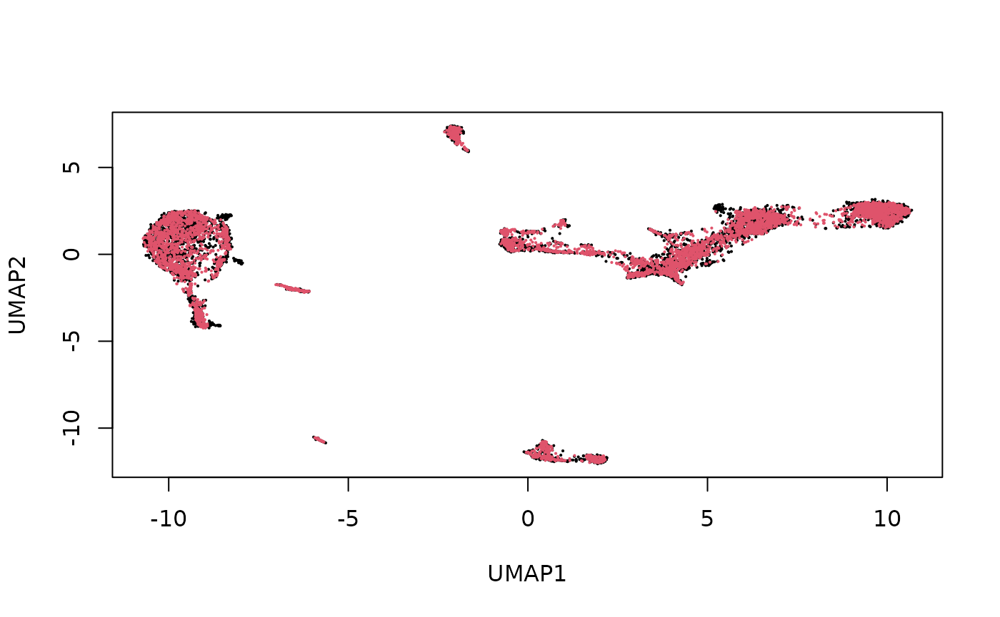
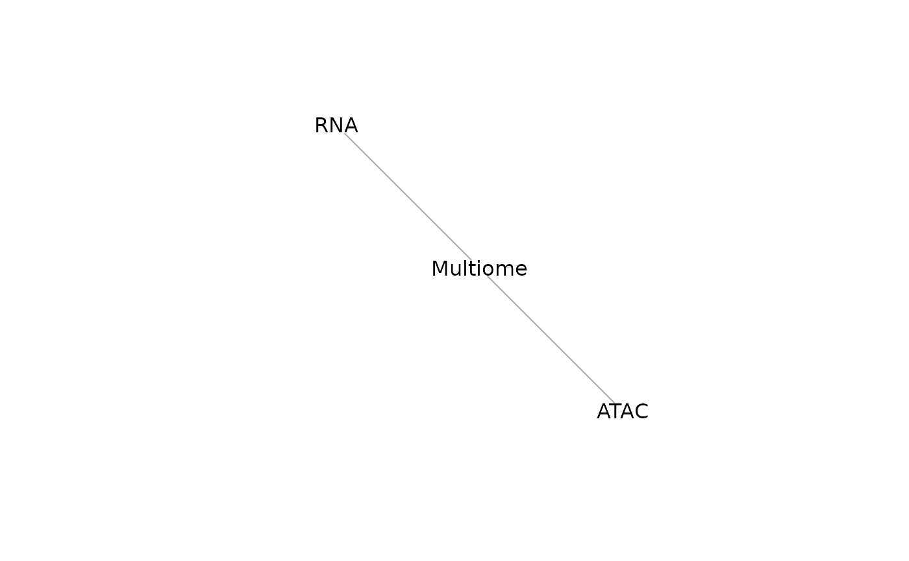
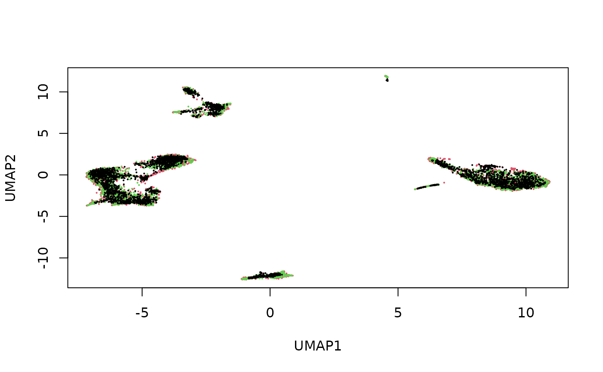
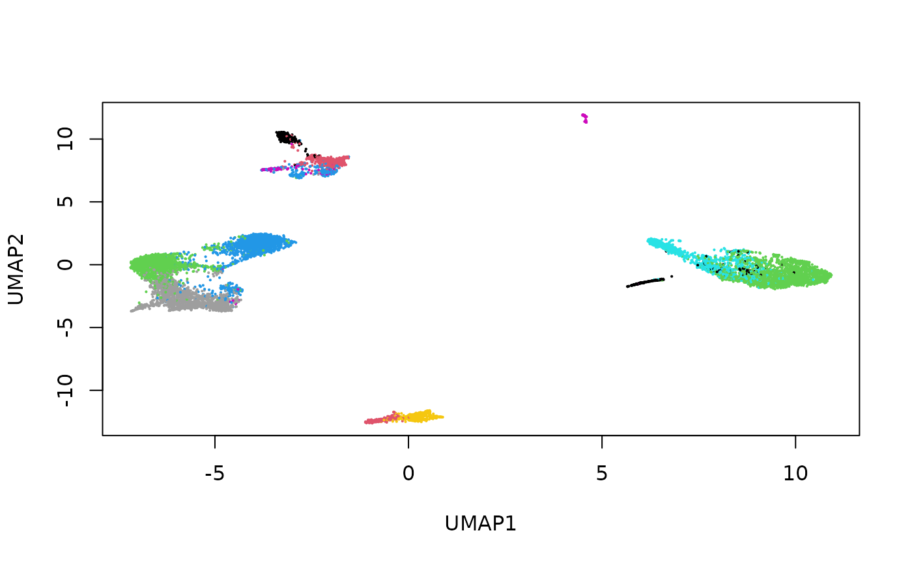

StabMap: Stabilised mosaic single cell data integration using unshared features
Shila Ghazanfar
Nick Robertson
Aiden Jin
Source:vignettes/stabMap_PBMC_Multiome.Rmd
stabMap_PBMC_Multiome.Rmd
library(StabMap)
library(magrittr)
library(scater)
library(scran)
library(SingleCellMultiModal)
library(gridExtra)
set.seed(2024)Introduction
StabMap is a technique for performing mosaic single cell data integration. Mosaic data integration presents the challenge of integration of data where only some features or cells are shared across datasets. For example, these challenges arise when integrating single-cell datasets that measure different molecular profiles, such as chromatin accessibility or RNA expression assays. Integrative analysis of such data may provide a more in-depth profile of each cell, facilitating downstream analysis. To read more about StabMap please see our paper on Nature Biotechnology.
Vignette Goals
In this vignette we will elaborate on how mosaic single cell data
integration is implemented in the StabMap package. We
address a few key goals:
Mosaic Data integration for 2 datasets
Demonstrating cell imputation following integration
Indirect mosaic data integration for 3 datasets, including 2 non-overlapping datasets
Load data
In this tutorial we will work with a multi-assay single cell dataset, consisting of ATAC and gene expression data for 10,032 cells.
mae <- scMultiome(
"pbmc_10x",
mode = "*", dry.run = FALSE, format = "MTX", verbose = TRUE
)Perform some exploration of this data.
mae## A MultiAssayExperiment object of 2 listed
## experiments with user-defined names and respective classes.
## Containing an ExperimentList class object of length 2:
## [1] atac: SingleCellExperiment with 108344 rows and 10032 columns
## [2] rna: SingleCellExperiment with 36549 rows and 10032 columns
## Functionality:
## experiments() - obtain the ExperimentList instance
## colData() - the primary/phenotype DataFrame
## sampleMap() - the sample coordination DataFrame
## `$`, `[`, `[[` - extract colData columns, subset, or experiment
## *Format() - convert into a long or wide DataFrame
## assays() - convert ExperimentList to a SimpleList of matrices
## exportClass() - save data to flat files
upsetSamples(mae)
head(colData(mae))## DataFrame with 6 rows and 6 columns
## nCount_RNA nFeature_RNA nCount_ATAC nFeature_ATAC
## <integer> <integer> <integer> <integer>
## AAACAGCCAAGGAATC 8380 3308 55582 13878
## AAACAGCCAATCCCTT 3771 1896 20495 7253
## AAACAGCCAATGCGCT 6876 2904 16674 6528
## AAACAGCCAGTAGGTG 7614 3061 39454 11633
## AAACAGCCAGTTTACG 3633 1691 20523 7245
## AAACAGCCATCCAGGT 7782 3028 22412 8602
## celltype broad_celltype
## <character> <character>
## AAACAGCCAAGGAATC naive CD4 T cells Lymphoid
## AAACAGCCAATCCCTT memory CD4 T cells Lymphoid
## AAACAGCCAATGCGCT naive CD4 T cells Lymphoid
## AAACAGCCAGTAGGTG naive CD4 T cells Lymphoid
## AAACAGCCAGTTTACG memory CD4 T cells Lymphoid
## AAACAGCCATCCAGGT non-classical monocy.. Myeloid
dim(experiments(mae)[["rna"]])## [1] 36549 10032
names(experiments(mae))## [1] "atac" "rna"Keep the first 2,000 cells only. Normalise and select variable features for the RNA modality.
sce.rna <- experiments(mae)[["rna"]]
# Normalisation
sce.rna <- logNormCounts(sce.rna)
# Feature selection
decomp <- modelGeneVar(sce.rna)
hvgs <- rownames(decomp)[decomp$mean > 0.01 & decomp$p.value <= 0.05]
length(hvgs)## [1] 952
sce.rna <- sce.rna[hvgs, ]Keep the first 2,000 cells only. Normalise and select variable features for the ATAC modality.
dim(experiments(mae)[["atac"]])## [1] 108344 10032
sce.atac <- experiments(mae)[["atac"]]
# Normalise
sce.atac <- logNormCounts(sce.atac)
# Feature selection using highly variable peaks
# And adding matching peaks to genes
decomp <- modelGeneVar(sce.atac)
hvgs <- rownames(decomp)[decomp$mean > 0.25 &
decomp$p.value <= 0.05]
length(hvgs)## [1] 788
sce.atac <- sce.atac[hvgs, ]Create a composite full data matrix by concatenating.
## [1] 1740 10032
assayType <- ifelse(rownames(logcounts_all) %in% rownames(sce.rna),
"rna", "atac"
)
table(assayType)## assayType
## atac rna
## 788 952Mosaic data integration with StabMap
We will simulate a situation where half of the cells correspond to the Multiome (RNA + ATAC features) modality, and half of the cells correspond to the RNA modality. Our goal is to then integrate both datasets by generating a joint embedding of the cells using all data, and to impute the missing ATAC cell values from the RNA modality cells.
dataType <- setNames(
sample(c("RNA", "Multiome"), ncol(logcounts_all),
prob = c(0.5, 0.5), replace = TRUE
),
colnames(logcounts_all)
)
table(dataType)## dataType
## Multiome RNA
## 5025 5007
assay_list <- list(
RNA = logcounts_all[assayType %in% c("rna"), dataType %in% c("RNA")],
Multiome = logcounts_all[
assayType %in% c("rna", "atac"), dataType %in% c("Multiome")
]
)
lapply(assay_list, dim)## $RNA
## [1] 952 5007
##
## $Multiome
## [1] 1740 5025
lapply(assay_list, class)## $RNA
## [1] "dgCMatrix"
## attr(,"package")
## [1] "Matrix"
##
## $Multiome
## [1] "dgCMatrix"
## attr(,"package")
## [1] "Matrix"Examine the shared features between the two datasets using
mosaicDataUpSet().
mosaicDataUpSet(assay_list, plot = FALSE)From this we note that there are shared features between the RNA and Multiome datasets, but there are many features that are observed only in the Multiome dataset and not the RNA - as we had constructed.
We can understand the mosaicDataTopology() of these
datasets, which generates an igraph object, which can be
inspected and plotted. The mosaicDataTopology() is a
weighted network where nodes represent each dataset, and edges connect
nodes with at least one overlapping feature.
mdt <- mosaicDataTopology(assay_list)
mdt## IGRAPH 45affb8 UN-- 2 1 --
## + attr: name (v/c), frame.color (v/c), color (v/c), label.color (v/c),
## | label.family (v/c)
## + edge from 45affb8 (vertex names):
## [1] RNA--Multiome
plot(mdt)From this we note that the datasets RNA and Multiome share at least some features. StabMap requires that the mosaic data topology network be connected, that is, that there should be a path between every pair of nodes in the network.
We now aim to integrate the data from the RNA and Multiome modality
by generating a common joint embedding for these data using
stabMap(). The stabMap() integration approach
aims to stabilize integration of single-cell data by exploting the
non-overlapping features, so that cells with similar biological profiles
will cluster. Stabilisation using non-overlapping features may be
important when there are limited overlapping features or when the
informative features are unknown.
What is stabMap doing?
stabMap generates a joint embedding using 3 steps:
Identify the
mosaicDataTopology()Embed the reference dataset into a lower dimensional space
Project cells from non-reference datasets onto the reference dataset embedding by using a model to traverse shortest paths in the
mosaicDataTopology()
Since the Multiome data contains all features, we treat this as the
reference dataset. Since we already examined the mosaic data topology,
we set plot = FALSE.
## treating "Multiome" as reference## generating embedding for path with reference "Multiome": "Multiome"## generating embedding for path with reference "Multiome": "RNA" -> "Multiome"
dim(stab)## [1] 10032 50
stab[1:5, 1:5]## Multiome_PC1 Multiome_PC2 Multiome_PC3 Multiome_PC4
## AAACAGCCAATCCCTT 12.885344 -3.075968 -1.723863 -0.3561525
## AAACAGCCAGTTTACG 11.314093 -2.344855 2.608507 1.2228681
## AAACATGCAAGGTCCT 13.821325 -3.100703 4.755135 -0.6836924
## AAACATGCACCGGCTA 6.287519 -2.080285 -24.802926 -0.6373922
## AAACATGCAGCAAGTG 12.500354 -3.058831 5.358400 -2.6757611
## Multiome_PC5
## AAACAGCCAATCCCTT -4.6468061
## AAACAGCCAGTTTACG -8.5576292
## AAACATGCAAGGTCCT 6.0538837
## AAACATGCACCGGCTA 7.1583625
## AAACATGCAGCAAGTG -0.1806992We can reduce the dimension further using non-linear approaches such as UMAP.
stab_umap <- calculateUMAP(t(stab))
dim(stab_umap)## [1] 10032 2
Here we see that the RNA and Multiome cells are fairly well-mixed.
Data imputation after StabMap
Given the joint embedding, we can predict the missing ATAC cell
values using imputeEmbedding(). We use
imputeEmbedding() for demonstration purposes as for our
data both modalities have sufficient sample sizes (cells) and thus
cellular imputation isn’t needed.
To imputeEmbedding() we provide the data list, and the
joint embedding as output from stabMap(). We set the
Multiome cells as reference and the RNA cells as query. This is useful
for downstream visualisation or further interpretation.
imp <- imputeEmbedding(
assay_list,
stab,
reference = colnames(assay_list[["Multiome"]]),
query = colnames(assay_list[["RNA"]])
)
class(imp)## [1] "list"
names(imp)## [1] "Multiome"
lapply(imp, dim)## $Multiome
## [1] 1740 5007
lapply(assay_list, dim)## $RNA
## [1] 952 5007
##
## $Multiome
## [1] 1740 5025
imp[["Multiome"]][1:5, 1:5]## 5 x 5 sparse Matrix of class "dgCMatrix"
## AAACAGCCAAGGAATC AAACAGCCAATGCGCT AAACAGCCAGTAGGTG AAACAGCCATCCAGGT
## CA6 1.299581 1.338925 1.075695 .
## CNR2 . . . .
## IFNLR1 . . . .
## RCAN3 1.414502 1.553737 1.656583 .
## ZNF683 . . . .
## AAACATGCACTTGTTC
## CA6 .
## CNR2 .
## IFNLR1 .
## RCAN3 .
## ZNF683 .Annotating Query Datasets using the StabMap embedding
We can also leverage this joint embedding to annotate the query data. We will use a k-nearest neighbors (KNN) based algorithm to transfer cell type labels from the reference to the query dataset. For our demonstration we will treat the Multiome dataset as the reference and the RNA dataset as the query.
The column data of the single cell experiments objects contained in
mae contain cell type annotations for each cell in the
celltype column. We first extract cell type annotations for
our reference dataset (Multiome).
annotation <- "celltype"
referenceLabels <- colData(
experiments(mae)[["rna"]]
)[colnames(assay_list$Multiome), annotation]
names(referenceLabels) <- colnames(assay_list$Multiome)
table(referenceLabels)## referenceLabels
## CD56 (bright) NK cells CD56 (dim) NK cells classical monocytes
## 189 217 987
## effector CD8 T cells intermediate monocytes MAIT T cells
## 205 344 49
## memory B cells memory CD4 T cells myeloid DC
## 207 792 105
## naive B cells naive CD4 T cells naive CD8 T cells
## 152 745 783
## non-classical monocytes plasmacytoid DC
## 199 51To classify query cells based on a reference dataset we can use the
classifyEmbedding() function. We provide the joint
embedding generated by stabMap() and cell type labels for
the reference dataset to the classifyEmbedding() function.
classifyEmbedding() returns a dataframe with predicted
labels in the predicted_labels column.
knn_out <- classifyEmbedding(
stab,
referenceLabels,
)As we have simulated out datasets we have the true label annotations for the RNA (query) cells. We can evaluate how well our predicted annotations match the true annotations use a measure such as accuracy.
# Extract query labels
queryLabels <- colData(
experiments(mae)[["rna"]]
)[colnames(assay_list$RNA), annotation]
names(queryLabels) <- colnames(assay_list$RNA)
acc <- mean(queryLabels == knn_out[names(queryLabels), "predicted_labels"])
acc## [1] 0.9203116Since both the reference and query cells are embedded in the same low dimensional space we can also visualise their cells together. Here we present a UMAP visualisation colour coded by their cell types.
# Extract reference and query cells from UMAP embedding
stab_umap_ref <- stab_umap[colnames(assay_list$Multiome), ]
stab_umap_query <- stab_umap[colnames(assay_list$RNA), ]
# Create UMAP for reference cells
df_umap_ref <- data.frame(
x = stab_umap_ref[, 1],
y = stab_umap_ref[, 2],
cell_type = referenceLabels[rownames(stab_umap_ref)]
)
p_ref <- df_umap_ref %>%
ggplot() +
aes(x = x, y = y, colour = cell_type) +
geom_point(size = 1) +
ggtitle("Reference cell type annotation")
# Create UMAP for query cells
df_umap_query <- data.frame(
x = stab_umap_query[, 1],
y = stab_umap_query[, 2],
cell_type = queryLabels[rownames(stab_umap_query)]
)
p_query <- df_umap_query %>%
ggplot() +
aes(x = x, y = y, colour = cell_type) +
geom_point(size = 1) +
ggtitle("Query predicted cell types")
grid.arrange(p_ref, p_query, ncol = 2)Indirect mosaic data integration with StabMap
StabMap is a flexible framework for mosaic data integration, and can still integrate data even when there are pairs of datasets that share no features at all. So long as there is a path connecting the datasets along the mosaic data topology (and the underlying assumption that the shared features along these paths contain information), then we can extract meaningful joint embeddings. To demonstrate this, we will simulate three data sources.
dataTypeIndirect <- setNames(
sample(c("RNA", "Multiome", "ATAC"), ncol(logcounts_all),
prob = c(0.3, 0.3, 0.3), replace = TRUE
),
colnames(logcounts_all)
)
table(dataTypeIndirect)## dataTypeIndirect
## ATAC Multiome RNA
## 3446 3342 3244
assay_list_indirect <- list(
RNA = logcounts_all[assayType %in% c("rna"), dataTypeIndirect %in% c("RNA")],
Multiome = logcounts_all[
assayType %in% c("rna", "atac"), dataTypeIndirect %in% c("Multiome")
],
ATAC = logcounts_all[
assayType %in% c("atac"), dataTypeIndirect %in% c("ATAC")
]
)
lapply(assay_list_indirect, dim)## $RNA
## [1] 952 3244
##
## $Multiome
## [1] 1740 3342
##
## $ATAC
## [1] 788 3446
lapply(assay_list_indirect, class)## $RNA
## [1] "dgCMatrix"
## attr(,"package")
## [1] "Matrix"
##
## $Multiome
## [1] "dgCMatrix"
## attr(,"package")
## [1] "Matrix"
##
## $ATAC
## [1] "dgCMatrix"
## attr(,"package")
## [1] "Matrix"Using mosaicDataUpSet(), we note that there are no
shared features between the ATAC and RNA datasets. For their integration
we might be able to match features by extracting genomic positions and
making the “central dogma assumption”, that is, that the peaks
associated with a genomic position overlapping a gene should correspond
to positive gene expression for that gene. However, using
stabMap() we need not make this assumption for the data
integration to be performed.
mosaicDataUpSet(assay_list_indirect, plot = FALSE)We can understand the mosaicDataTopology() of these
datasets, which generates an igraph object, which can be
inspected and plotted.
mdt_indirect <- mosaicDataTopology(assay_list_indirect)
mdt_indirect## IGRAPH aeeb398 UN-- 3 2 --
## + attr: name (v/c), frame.color (v/c), color (v/c), label.color (v/c),
## | label.family (v/c)
## + edges from aeeb398 (vertex names):
## [1] RNA --Multiome Multiome--ATAC
plot(mdt_indirect)
StabMap only requires that the mosaic data topology network be connected, that is, that there should be a path between every pair of nodes in the network. While ATAC and RNA have no overlapping features, since there is a path between RNA and ATAC (via Multiome), we can proceed.
We now generate a common joint embedding for these data using
stabMap(). Since the Multiome data contains all features,
we again treat this as the reference dataset. Since we already examined
the mosaic data topology, we set plot = FALSE.
## treating "Multiome" as reference## generating embedding for path with reference "Multiome": "Multiome"## generating embedding for path with reference "Multiome": "RNA" -> "Multiome"## generating embedding for path with reference "Multiome": "ATAC" -> "Multiome"
dim(stab_indirect)## [1] 10032 50
stab_indirect[1:5, 1:5]## Multiome_PC1 Multiome_PC2 Multiome_PC3 Multiome_PC4
## AAACAGCCAATCCCTT 12.742178 3.0909138 1.757548 0.2695901
## AAACAGCCAATGCGCT 12.708202 1.5955101 -6.170703 0.6596048
## AAACATGCAAGGTCCT 13.646213 2.9647341 -4.846989 0.5665123
## AAACATGCACCGGCTA 6.143255 2.1167652 24.572169 0.4845784
## AAACATGCACTTGTTC 9.236392 0.8773643 -3.033358 0.2705357
## Multiome_PC5
## AAACAGCCAATCCCTT 4.4791329
## AAACAGCCAATGCGCT -2.3739650
## AAACATGCAAGGTCCT -6.5805017
## AAACATGCACCGGCTA -7.6081000
## AAACATGCACTTGTTC 0.2939029We can reduce the dimension further using non-linear approaches such as UMAP.
stab_indirect_umap <- calculateUMAP(t(stab_indirect))
dim(stab_indirect_umap)## [1] 10032 2
plot(stab_indirect_umap,
pch = 16, cex = 0.3,
col = factor(dataTypeIndirect[rownames(stab_indirect)])
)
Here we see that the RNA, ATAC and Multiome cells are fairly well-mixed.
Colouring the cells by their original cell type, we can also see that the mosaic data integration is meaningful.
cellType <- setNames(mae$celltype, colnames(mae[[1]]))
plot(stab_indirect_umap,
pch = 16, cex = 0.3,
col = factor(cellType[rownames(stab_indirect)])
)
Session Info
## R version 4.4.1 (2024-06-14)
## Platform: x86_64-pc-linux-gnu
## Running under: Ubuntu 22.04.4 LTS
##
## Matrix products: default
## BLAS: /usr/lib/x86_64-linux-gnu/openblas-pthread/libblas.so.3
## LAPACK: /usr/lib/x86_64-linux-gnu/openblas-pthread/libopenblasp-r0.3.20.so; LAPACK version 3.10.0
##
## locale:
## [1] LC_CTYPE=C.UTF-8 LC_NUMERIC=C LC_TIME=C.UTF-8
## [4] LC_COLLATE=C.UTF-8 LC_MONETARY=C.UTF-8 LC_MESSAGES=C.UTF-8
## [7] LC_PAPER=C.UTF-8 LC_NAME=C LC_ADDRESS=C
## [10] LC_TELEPHONE=C LC_MEASUREMENT=C.UTF-8 LC_IDENTIFICATION=C
##
## time zone: UTC
## tzcode source: system (glibc)
##
## attached base packages:
## [1] stats4 stats graphics grDevices utils datasets methods
## [8] base
##
## other attached packages:
## [1] HDF5Array_1.32.0 rhdf5_2.48.0
## [3] DelayedArray_0.30.1 SparseArray_1.4.8
## [5] S4Arrays_1.4.1 abind_1.4-5
## [7] Matrix_1.7-0 gridExtra_2.3
## [9] SingleCellMultiModal_1.16.0 MultiAssayExperiment_1.30.3
## [11] scran_1.32.0 scater_1.32.1
## [13] ggplot2_3.5.1 scuttle_1.14.0
## [15] SingleCellExperiment_1.26.0 SummarizedExperiment_1.34.0
## [17] Biobase_2.64.0 GenomicRanges_1.56.1
## [19] GenomeInfoDb_1.40.1 IRanges_2.38.1
## [21] S4Vectors_0.42.1 BiocGenerics_0.50.0
## [23] MatrixGenerics_1.16.0 matrixStats_1.3.0
## [25] magrittr_2.0.3 StabMap_0.99.3
## [27] BiocStyle_2.32.1
##
## loaded via a namespace (and not attached):
## [1] jsonlite_1.8.8 ggbeeswarm_0.7.2
## [3] magick_2.8.4 farver_2.1.2
## [5] rmarkdown_2.27 fs_1.6.4
## [7] zlibbioc_1.50.0 ragg_1.3.2
## [9] vctrs_0.6.5 memoise_2.0.1
## [11] DelayedMatrixStats_1.26.0 htmltools_0.5.8.1
## [13] BiocBaseUtils_1.6.0 AnnotationHub_3.12.0
## [15] curl_5.2.1 BiocNeighbors_1.22.0
## [17] Rhdf5lib_1.26.0 sass_0.4.9
## [19] bslib_0.8.0 desc_1.4.3
## [21] plyr_1.8.9 cachem_1.1.0
## [23] igraph_2.0.3 mime_0.12
## [25] lifecycle_1.0.4 pkgconfig_2.0.3
## [27] rsvd_1.0.5 R6_2.5.1
## [29] fastmap_1.2.0 GenomeInfoDbData_1.2.12
## [31] digest_0.6.36 colorspace_2.1-1
## [33] AnnotationDbi_1.66.0 dqrng_0.4.1
## [35] irlba_2.3.5.1 ExperimentHub_2.12.0
## [37] textshaping_0.4.0 RSQLite_2.3.7
## [39] beachmat_2.20.0 labeling_0.4.3
## [41] filelock_1.0.3 fansi_1.0.6
## [43] httr_1.4.7 compiler_4.4.1
## [45] bit64_4.0.5 withr_3.0.0
## [47] BiocParallel_1.38.0 viridis_0.6.5
## [49] DBI_1.2.3 UpSetR_1.4.0
## [51] highr_0.11 rappdirs_0.3.3
## [53] rjson_0.2.21 bluster_1.14.0
## [55] tools_4.4.1 vipor_0.4.7
## [57] beeswarm_0.4.0 glue_1.7.0
## [59] rhdf5filters_1.16.0 grid_4.4.1
## [61] cluster_2.1.6 generics_0.1.3
## [63] gtable_0.3.5 BiocSingular_1.20.0
## [65] ScaledMatrix_1.12.0 metapod_1.12.0
## [67] utf8_1.2.4 XVector_0.44.0
## [69] RcppAnnoy_0.0.22 ggrepel_0.9.5
## [71] BiocVersion_3.19.1 pillar_1.9.0
## [73] limma_3.60.4 dplyr_1.1.4
## [75] BiocFileCache_2.12.0 lattice_0.22-6
## [77] bit_4.0.5 tidyselect_1.2.1
## [79] locfit_1.5-9.10 Biostrings_2.72.1
## [81] knitr_1.48 bookdown_0.40
## [83] edgeR_4.2.1 xfun_0.46
## [85] statmod_1.5.0 UCSC.utils_1.0.0
## [87] yaml_2.3.10 evaluate_0.24.0
## [89] codetools_0.2-20 tibble_3.2.1
## [91] BiocManager_1.30.23 cli_3.6.3
## [93] uwot_0.2.2 systemfonts_1.1.0
## [95] munsell_0.5.1 jquerylib_0.1.4
## [97] Rcpp_1.0.13 dbplyr_2.5.0
## [99] png_0.1-8 parallel_4.4.1
## [101] pkgdown_2.1.0 blob_1.2.4
## [103] sparseMatrixStats_1.16.0 SpatialExperiment_1.14.0
## [105] slam_0.1-51 viridisLite_0.4.2
## [107] scales_1.3.0 purrr_1.0.2
## [109] crayon_1.5.3 rlang_1.1.4
## [111] KEGGREST_1.44.1